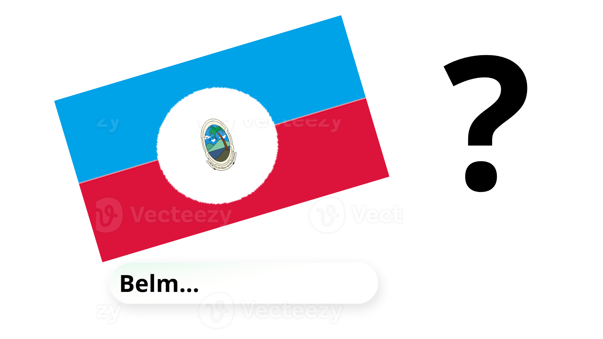

GeoFlex
Criado por Awi
Alguns direitos reservados - 2026
Só avisando que por favor dê aviso prévio se for remixar o jogo, e
eu não permito copiar o jogo com más intenções.😉
Sobre o criador
Eu sou brasileiro e meu nome real não é awi, mas você pode me chamar assim
Comecei a desenvolver esse jogo dia 17/06/2026 mais ou menos umas 15:32:48 da tarde
Configurações
Som: (em breve)
Gráficos: (em breve)
Idioma: Português
Changelog
2026-06-17 ~15:00 UTC-3 - GeoFlex v0.0.1
• Tela inicial
• Créditos
• Configurações (placeholder)
2026-06-18 - GeoFlex v0.1.0
• Primeiro minigame: Acerte o País
2026-06-18 ~22:00 UTC-3 - GeoFlex v0.1.1
• Correções de bugs menores
2026-06-19 20:31 UTC-3 - GeoFlex v0.2.0
• Embaralhamento de perguntas
• Exibição da pergunta atual
2026-06-19 22:00 UTC-3 - GeoFlex v0.2.1
• Changelog
2026-06-19 22:29 UTC-3 - GeoFlex v0.2.2
• Melhor centralização dos botões e objetos no menu
Jogos
